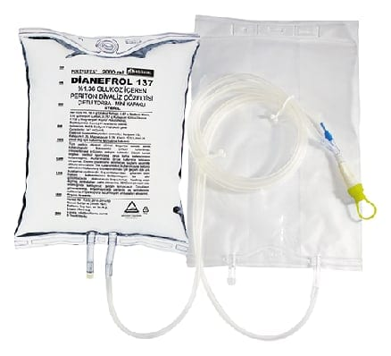

Dianefrol 137 %1.36 Glukoz İçeren Periton Diyaliz Çözeltisi, 2000 ml / Çiftli

Ne için kullanılır
KT · Bölüm 1• Periton diyalizi çözeltileri böbrekleri geçici olarak görevini yapamayan ya da iyileşmeyecek şekilde bozulmuş hastalarda kullanılır. Kandaki fazla suyu ve atık maddeleri çekerek alırlar; anormal olarak yükselmiş tuz düzeylerini ise normale döndürürler. • DİANEFROL 137 her biri 1, 2, 5 veya 6 litrelik tek torbalı veya 1, 2 veya 2,5 litrelik çift torbalı olarak kullanıma sunulmuş bir periton diyalizi (karından yapılan diyaliz) çözeltisidir. • Tek torbalı 6 litrelik olan form, aletli periton diyaliz cihaz seti ile birlikte ve çift torbalı olan formlar mini kapakla birlikte kullanıma sunulmuştur. Çift torbalı formlarında torbalardan birinde çözelti yer almamaktadır; bir önceki değişimde karın boşluğunda bekleyen çözeltinin boşaltılması için kullanılır. • DİANEFROL 137'nin %1.36 oranında glukoz (şeker) içeren bu formundan başka %2.27 ve %3.86 oranında şeker içeren iki değişik konsantrasyonda formu da bulunmaktadır ve çözelti içindeki şeker oranı yükseldikçe, çözeltinin kandan su çekme oranı da artar. • DİANEFROL 137 size periton diyalizi ile tedavinin gerekli olduğu şu durumlar için reçetelenmiş olabilir: - Böbreklerinizin geçici ya da kalıcı olarak yetmezliğe girdiği durumlar; - Vücudunuzda aşırı bir sıvı birikiminin olduğu durumlar; - Vücudunuzun asitlik - bazlık ya da tuz dengesinde ciddi bozuklukların olduğu durumlar;
- İlaç ve diğer zehirli maddelerle meydana gelen zehirlenmelerde, başka bir tedavi bulunamadığı durumlarda.